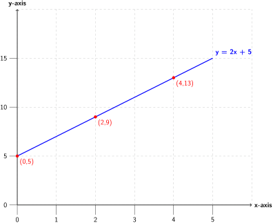

First, draw the graph of
\(y=2x+5.\)

From the graph:
-
\(0\) pages cost
\(KSh. 5\)
-
\(2\) pages cost
\(KSh. 9\)
To estimate the number of pages that cost
\(KSh. 65\) to print, we use our equation:
\(y=2x+5.\)
Since the cost (y) is given as KSh. 65, substitute for y then find x, the number of pages.
\begin{equation*}
65 = 2x + 5
\end{equation*}
\begin{equation*}
65 - 5 = 2x
\end{equation*}
\begin{equation*}
60 = 2x
\end{equation*}
\begin{equation*}
\frac{60}{2} = \frac{2x}{2}
\end{equation*}
\begin{equation*}
x = 30 \text{ pages }
\end{equation*}